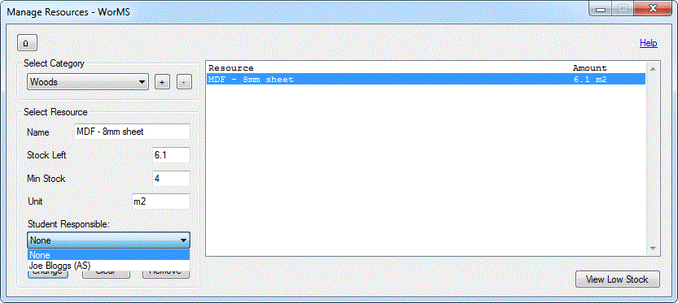
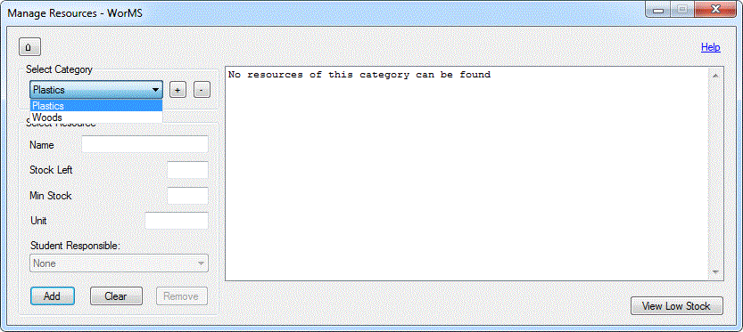
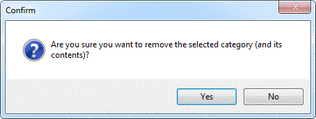

This form is used to track, add, change and remove resource stock in the workshop. Resources are split into categories that can be created by the user.
The Resource Manager works with a single resources file in the WorMS folder, which stores the resource records. Upon opening this form for the first time or after changing the file directory, you are likely to be presented with an empty window:

The information in the list box to the right is to indicate that the program has found no records on the resources file.
NOTE: If the resources file was to be deleted or tampered with, some or all records on the actual file could be ignored. Please see Troubleshooting for more details if resources you have previously saved cannot be found.
The only button available will be the Add Category button. Upon clicking it, an input box to enter a new category will appear.

Clicking Cancel will stop the category from being added. Clicking OK will validate your input and add the new category to the category selector if correct, ready for resources in that category to be added.

Now that a category has been added, data can be input into Select Resource to add new resources in the category created.
NOTE: Any categories added without resources will not be saved to the records file when the Resource Manager is closed.
Upon adding a new resource, a record for that resource is stored on file and added to the resource list. The data input in Select Resource is then cleared. Data from an existing resource can be viewed and changed by simply selecting it in the resource list.

When making a change to resource stock, the student responsible for the change can be selected in the student responsible selector. There must be students in the students file in order for them to appear.
Of course, any time a student is not responsible or a resource has been restocked, the None option can be selected.
NOTE: Remember to click Change or press enter each time data in a resource is modified since clicking away from the selected resource will mean data input is lost if it has not already been saved.
Clicking on the category selector will open a list of categories the user has created.
As stated before, when the Resource Manager is reopened this list will only retain those categories that have resources associated with them.
Upon selecting a resource in the resource list, the remove resource button is also enabled so the user can remove the selected resource. A confirmation will appear upon clicking the button and selecting Yes will remove that resource from file.

While a category is selected, the remove category button will be enabled. Upon clicking the button, a confirmation will appear. Selecting Yes will remove the selected category and its contents (if any) from file.
